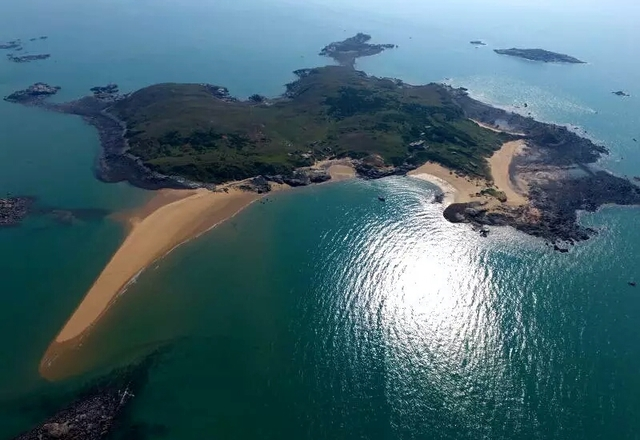
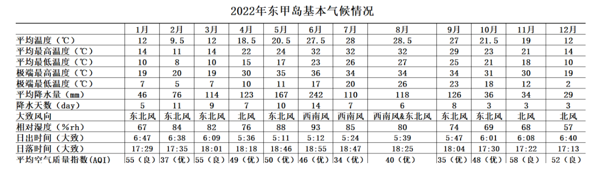
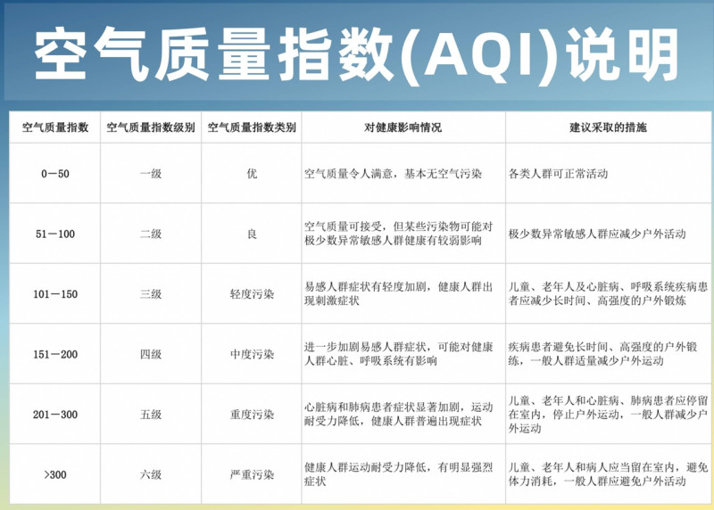

东甲岛
来源：百度百科

东甲岛，俗称简单金银岛，也是为闽台贸易岛。 地理坐标25°17′N，119°45′E,东甲岛是福建省平潭综合实验区最南端海域临近台湾海峡的一座远离大陆的偏僻荒岛， 在平潭县海坛岛南部，距草屿约9公里。南北走向，长1.4公里，宽0.5公里，面积1.567平方公里, 岛上主要由火山岩组成，基岩海岸，岛上有着丰富的淡水资源。
而平潭位于我国东南沿海、台湾海峡中北部，其以丰富的自然文化资源、 充分的开发空间以及独特的区域优势深受党中央、国务院的高度重视，并赋予了一系列优惠政策。 2011 年 11 月，国务院批复《平潭综合实验区总体发展规划》明确将旅游业作为四大主导产业之一。 2015 年 4 月，国务院印发的 《中国（福建）自由贸易试验区总体方案》，明确提出平潭“重点建设两岸共同家园和国际旅游岛”。 积极推进旅游资源的综合开发利用，发展现代海岛旅游经济，有利于将平潭发展的总体形象进一步向“国际旅游岛”靠拢。 东甲岛作为一座远离大陆还未被开发的原始岛屿，是平潭构建“一廊两环五区”的国际旅游岛建设发展格局的五区之一——“离岛生态休闲区”中重要的一个攻克对象。 东甲岛的重点发展，不仅是对国家相关政策的积极响应，更是大力推动了平潭自身包括社会效益、文化传播、数字经济等步伐的前进。
据说东甲岛原来是闽台贸易点。它距离台湾省台中市120千米， 距离台湾省新竹市60海里（约等于111.12公里）航程仅需3小时且无需通行证。 凭借东甲岛得天独厚的地理优势，东甲岛未来可规划为“台海两岸人民亲近岛”，学习台湾休闲旅行模范，将东甲岛建设开发成休闲旅游岛。
两岸旅游交流始于1987年，自两岸旅游交流开始以来, 旅游业以其特有的优势在两岸经济、文化交流中起了积极的作用:一、是通过不断加强两岸旅游交流与合作,使旅游成为两岸人员往来的重要渠道。二、是以旅游为载体,积极促进“三通”,大力推动两岸经贸、文化等各领域的交流与合作。相信东甲岛的开发建设定会将两岸友谊再进一步推向一个更崭新、更友好的高度。
东甲岛基本气候： 
空气质量指标：

民俗故事：
东甲岛的建立：“黄岛主”本名黄国富，独自在东甲岛上住了18年。“岛主”是当地人给的雅号。 他父亲曾到莆田当上门女媚，因生活不如意，只得带一对儿女回到南中村。为了糊口，年纪小小的黄国富， 讨小海，卖海鲜，甚至“偷渡”台湾，却被抓到遣返。因找不到好的生计，1995年，他用渔船把40多只本地山羊羔送上东甲岛， 开始了荒岛放牧生涯。在岛上种植了木麻黄以抵挡海风。
东甲岛，1984年县政府开辟为对台小额贸易点，可红火了没多久，就被撤点了。 岛上遗留下东甲贸易公司的办公楼，也日渐荒废。办公楼的门、窗被人偷走，四面透风。 黄国富捡拾从海上飘来的旧木料修补门窗，遮挡冬季凛冽的海风。
养羊、捕鱼……他形单影只，唯有海浪声作伴，寂静得可怕。他养了几条狗作伴。想老婆孩子时，他就回趟南中村， 顺便补充生活必需品。一次，台风流连不去，他困在岛上18天，窘到没米下锅。
自嘲为“岛主”的黄国富，经常到岛边巡察，特别是台风季节。他因此还救过15人的命。2010年底，因为翻船，海面上漂来7个人， “黄岛主”赶紧把他们救上岸，烧火暖身，炒菜做饭。多年来，他在海边还捡到8具遇难渔民的尸体，有4具无人认领，他按照传统方式，在岛上庄严地予以埋葬。
18年来，在“黄岛主”日复一日的照料下，荒废的东甲岛开始有了生机，岛上供奉的妈祖庙也在修缮过后香火兴旺。 诸多台湾同胞来到东甲岛供奉妈祖，以解思乡之情。毫无疑问，东甲岛是平潭与台湾之间的一颗小小纽扣，联系着隔岸的亲情。
 *********@qq.com
*********@qq.com